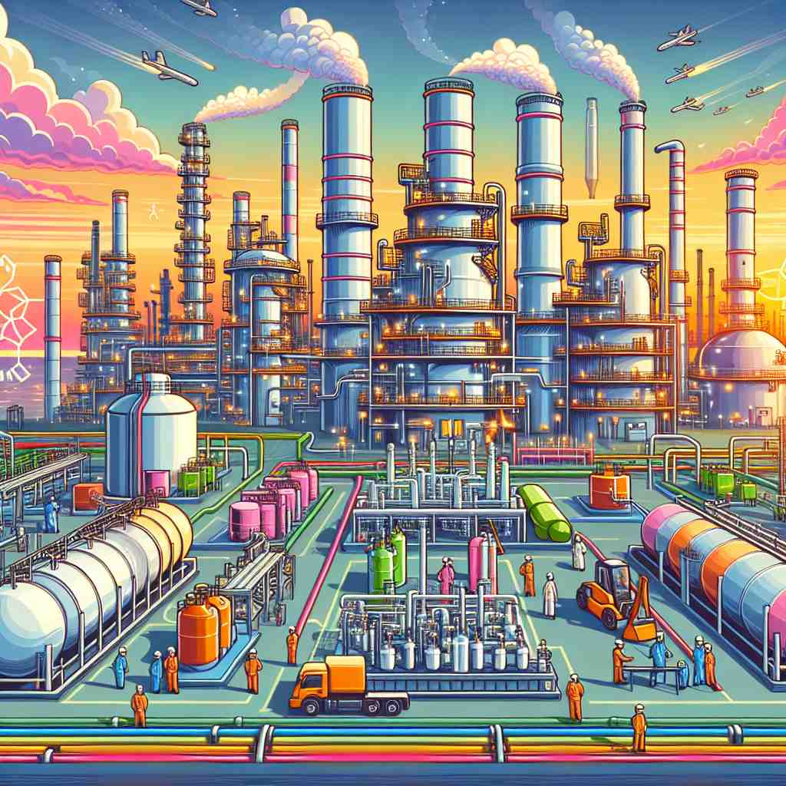
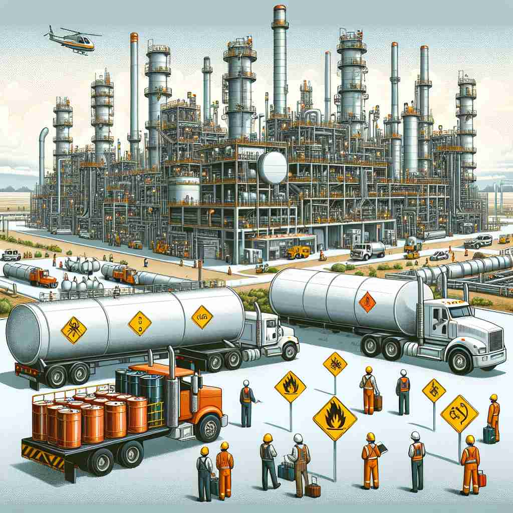
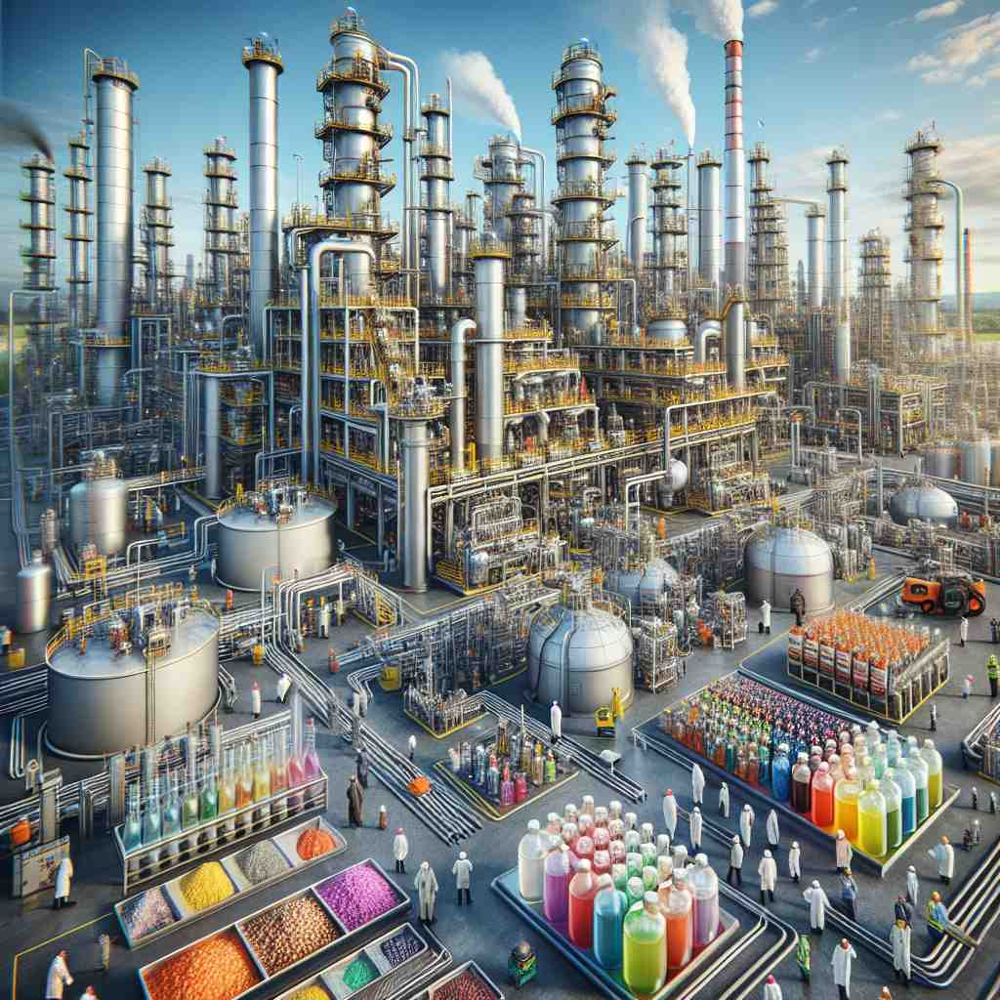

💬 The workers are busy at the petrochemical plant. 工人在石油化工厂忙碌。

💬 The factory produces many petrochemical products for everyday use. 工厂生产许多日常使用的石油化工产品。

💬 The workers are busy at the petrochemical plant. 工人在石油化工厂忙碌。

💬 The workers are inspecting the petrochemical products in the factory. 工人在工厂里检查石化产品。
🧠 记住'petrochemical'的关键是理解它由'petro-'（石油）和'chemical'（化学品）组成。核心含义是从石油或天然气中获得的化学物质。无论是用作名词描述这些物质，还是用作形容词描述相关的行业或过程，都源于这个基本概念。想象一滴原油变成各种化学产品的过程，可以帮助你记住这个词的各种用法。
🗝️ n. a chemical substance obtained from petroleum or natural gas 一种从石油或天然气中获得的化学物质
🎭 在一个高科技实验室里，化学家正仔细地观察一瓶液体。他们讨论着这是从石油中提取的化学物质，这些化学物质可以用于制造塑料、染料和其他产品。这个场景展示了'pneumopetrolchemical'作为从石油或天然气中获得的化学物质的含义。
💬 Plastics are common petrochemicals used in everyday products. 塑料是日常产品中常见的石油化工材料。
🌳 由词根 "petro-"（来自希腊语，意为 "石油"）和 "-chemical"（化学的）组成，构成一个名词，表示 "石油化工产品"。
🕸️ 1.petroleum: 石油 2.petrol: 汽油 3.chemistry: 化学
💡 记忆 "petrochemical" 时，可以联想石油（petro）和化学（chemical）结合在一起的产品，主要指从石油中提取或以石油为基础制成的化学品。通过这两个部分的组合，加深对词义的理解。